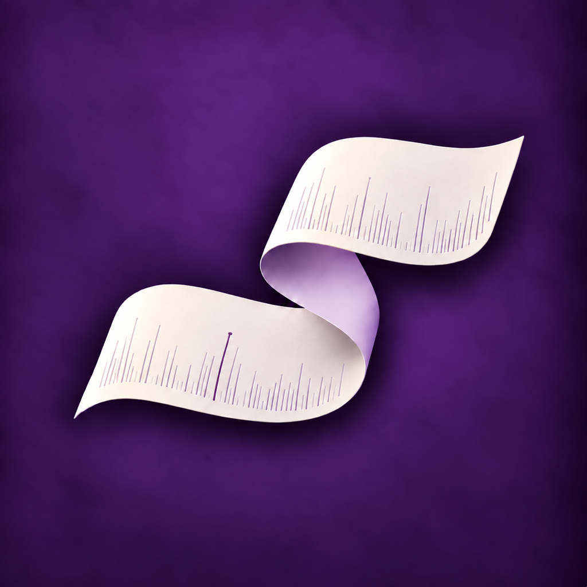

연설가 · iPhone & iPad
준비한 말에 집중하세요.
원고를 다듬고, 읽던 위치를 지키며, 발표 시간을 살펴보세요. iPhone과 iPad에서 준비부터 발표까지 이어집니다.
처음 시작하기
짧은 예문으로 편안한 읽기 속도를 맞추거나 기본 속도로 시작하세요. 예시 원고를 열어 연습한 뒤 텍스트를 붙여 넣거나 TXT, Markdown, RTF 파일을 가져올 수 있습니다.
원고와 큐카드로 읽기
보기 설정에서 글자 크기를 조절하고 원고 또는 큐카드로 읽으세요. 자동 진행과 직접 넘기기를 선택할 수 있습니다. 다른 부분을 살펴본 뒤에는 읽던 곳으로 돌아갈 수 있습니다.
발표 시간과 진행 기록
발표를 시작하면 구간별 사용 시간과 전체 경과를 확인할 수 있습니다. 잠깐 멈추는 것과 순서의 완료 표시는 서로 다릅니다. 발표 기록은 음성을 인식한 결과가 아니며, 목차에서 직접 고칠 수 있습니다.
원고와 설정을 한 파일로 저장하기
원고 보관함의 ‘원고 파일 저장’을 누르면 .orator 파일에 원고 한 편과 서식, 배정 시간, 읽기 설정, 저장된 읽기 위치가 함께 담깁니다. 기존 TXT 내보내기는 본문을 전달할 때 사용하세요.
iCloud Drive와 다른 기기
파일 저장 화면에서 iCloud Drive를 선택하세요. iCloud에 로그인되어 있고 사용 가능한 경우 앱 전용 폴더를 이용할 수 있습니다. 다른 기기에서는 보관함의 ‘원고 파일 열기’로 파일을 선택하세요. 앱의 보관함은 기기별로 저장되므로, 나중에 수정한 내용을 옮기려면 파일을 다시 저장해야 합니다. 기기 간 파일 전송은 iCloud 연결 상태와 저장 공간에 따라 달라집니다.
같은 원고의 다른 내용이 있을 때
가져온 파일이 보관함의 원고와 다르면 새 사본으로 열 수 있습니다. 기존 원고를 자동으로 덮어쓰지 않습니다. 원하는 내용을 확인한 뒤 사용할 원고를 고르세요.
원고를 보관하려면
앱 안의 자동 저장은 해당 기기의 보관함을 위한 기능입니다. 앱 삭제나 기기 교체 전에 필요한 원고를 .orator 파일로 저장하고, 파일이 열리는지 확인하세요. 파일 하나에는 원고 한 편이 담깁니다.
구매와 환불
연설가는 한 번 구매해 사용하는 앱이며 구독이나 광고가 없습니다. 구매 내역과 환불은 Apple App Store에서 관리합니다.